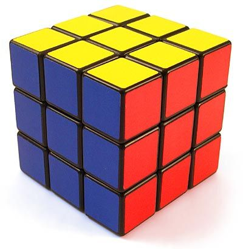

Rubikova kocka je najpopularnija slagalica na svetu.

Kocku je izumeo Erne Rubik mađarski profesor arhitekture i dizajna 1974. godine.
I dan danas rubikova kocka fascinira milione ljudi.
Šta možete da pronađete ovde:
- Istorijat i nastanak kocke
- Pregled napoznatijih modela i varijacija
- Galeriju slika različitih kocki
- Kontakt formu za ljubitelje slaganja